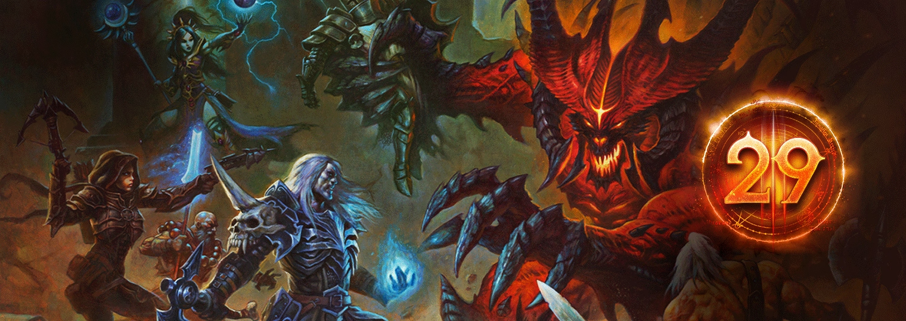
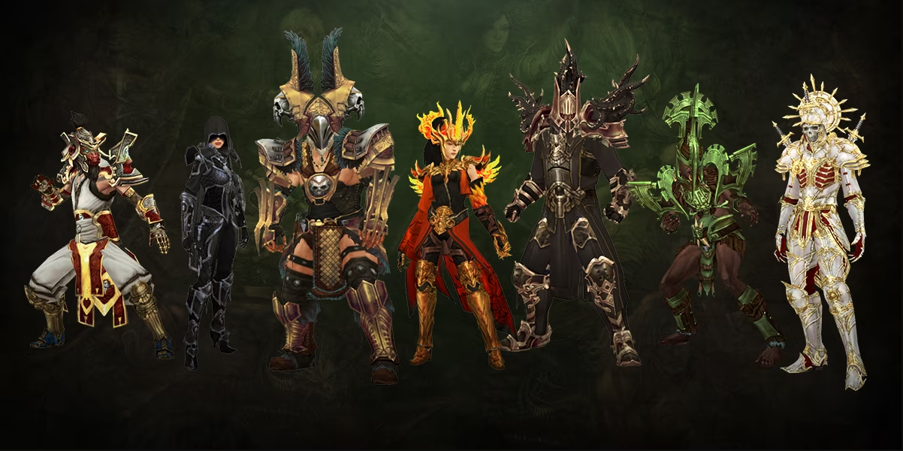
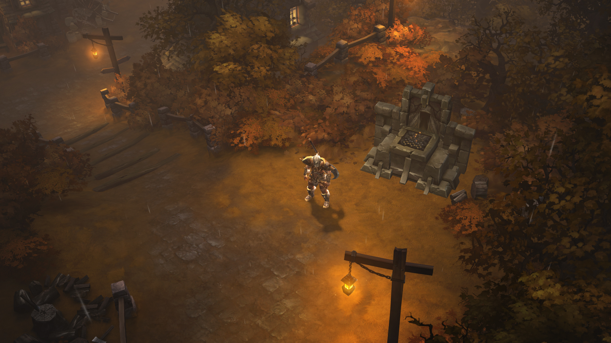
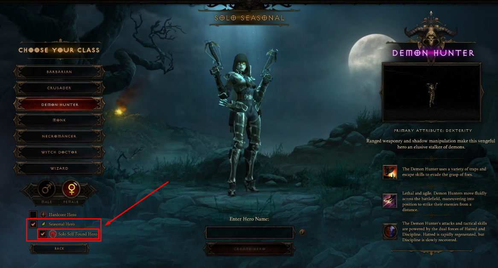
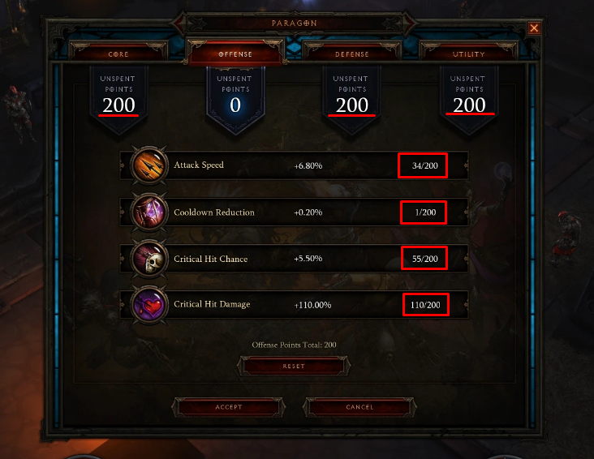

Temporada 29: Visões da Hostilidade
INÍCIO
Os Conjuntos de Classe disponíveis para completar certos capítulos na Jornada da Temporada, cortesia do Presente de Haedrig, mudaram mais uma vez. Listamos os conjuntos disponíveis abaixo. Para quem é novo na Seasons, veja como funciona:
Concluir os Capítulos 2, 3 e 4 da Jornada da Temporada irá recompensá-lo com três Presentes de Haedrig. Cada Presente contém algumas peças de um dos seus Conjuntos de Classe. Os jogadores só podem desbloquear um conjunto de classe dessa maneira por temporada entre Hardcore e Non-Hardcore, então escolha com sabedoria!
O conjunto que você receberá depende da Classe do personagem que você está jogando ao abrir cada Presente de Haedrig. Para coletar um conjunto de classe completo, você precisará abrir todos os três no mesmo personagem.
Sets da Temporada e link para o Maxroll
Builds
OBS: Recomendação feiticeiro de FrangoNervoso
https://maxroll.gg/d3/category/guides
Conquista sazonal
- Coletar 50 milhões de Ouro fora da Câmara do Tesouro e do Santuário Interno
- Alcançar a Fenda Maior de nível 55 jogando solo com os bônus de seis partes de algumas builds
- Alcançar a Fenda Maior de Nível 45 Solo sem nenhum Item de Conjunto equipado
- Completar os Atos I a V no nível máximo em menos de 1 hora
- Dominar 8 das seguintes Masmorras de Conjunto
Atualização de builds
- Cruzado: Cinto do Justiceiro
- Feiticeiro: FrangoLoco
Visões da Hostilidade

- Os altares de sacrificio ficarão disponíveis para todas as temporadas!
- Link para montar seus bônus https://caleko.github.io/s28planner
Para a Temporada 29, visões da hostilidade, as maquinações nefastas do Inferno Ardente se infiltraram em cada canto de Santuário, deturpando a realidade. Essa alteração deu lugar às Visões da Hostilidade, dimensões de bolso com acesso pelas Fendas Diabólicas.

Build recomendada (1-12): https://caleko.github.io/s28planner/index.html
MODO SOLO INDEPENDENTE

Matadores de demônios em busca de aumentar a intensidade de sua jornada por Santuário podem experimentar o novo modo Solo Independente. Nele, você terá que derrotar as hordas do Inferno por conta própria. Isso mesmo: é uma experiência de jogo solo. Uma versão Hardcore desse modo está disponível se você quiser aumentar ainda mais o desafio.
Decidimos trazer o Solo Independente, um modo de jogo solo com suporte oficial, para Diablo III. Sem os bônus de experiência de fazer de grupo ou a proteção dos outros jogadores enquanto você abre caminho pelas legiões demoníacas, esse modo vai pôr suas habilidades à prova. Para celebrar as conquistas dos jogadores que tiverem coragem de usar um personagem nesse modo, também criamos uma Tabela de Classificação exclusiva do Solo Independente, que funciona como as demais.
Para criar um personagem no Solo Independente, selecione a opção Herói Solo na tela de criação de personagem. Você poderá jogar a Campanha e o Modo Aventura normalmente, mas apenas a opção Jogo Particular estará disponível. As Fendas de Desafio podem ser concluídas com um grupo enquanto o modo for de temporada. O Solo Independente é uma jornada solitária, então você não poderá iniciar esse modo quando estiver em grupo nem terá acesso a aspectos multijogador de Diablo III, como a negociação. Renascimento está disponível para Solo Independente.
Limite de Excelência

Vamos fazer mudanças nos pontos de excelência para que funcionem com o Solo Independente e o tema da Temporada 29. Agora você pode atribuir um total de 800 pontos de excelência ao seu personagem do Solo Independente. Antes, você só podia atribuir 50 para cada atributo nas categorias Núcleo, Defesa, Ataque e Utilidade, mas agora pode atribuir até 200 em cada atributo. Cada categoria só pode ter 200 pontos de excelência.
Essa mudança é exclusiva da Temporada 29.
Recompesas da Temporada